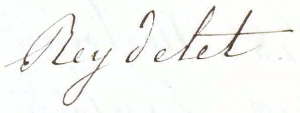

BnF Reydellet collection

Very little is known about Reydellet or Reydelet, apart from the fact that he donated 27 Tamil manuscripts to the Bibliothèque du Roi in 1833. These 27 items are listed in an old, undated handwritten catalogue, but they do not correspond exactly to the same titles given in the inventory of 1833. They were described again in the 1845 catalogue of Vēlāṅkaṇṇi Ārōkkiyam, again with slight differences.